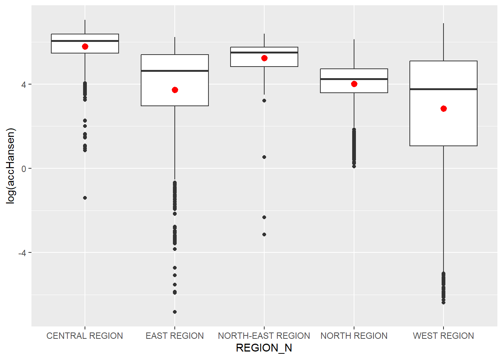
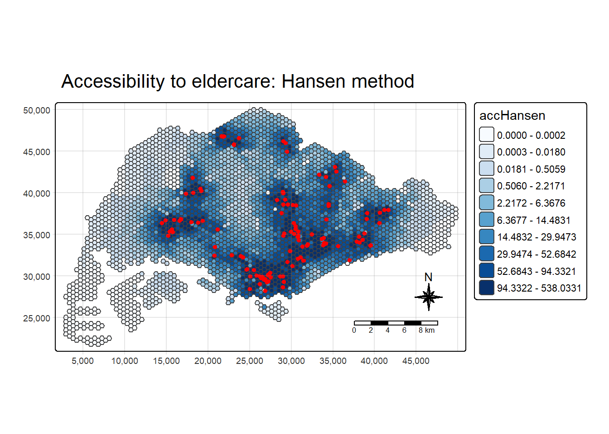
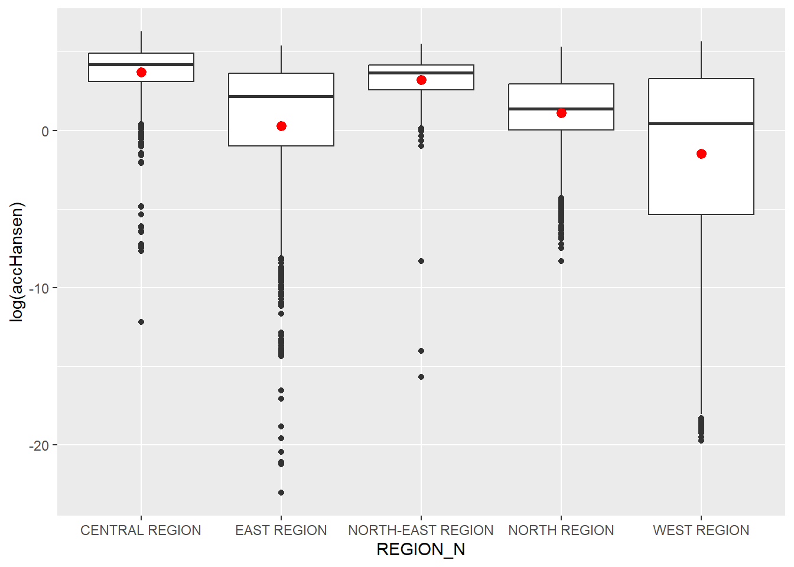
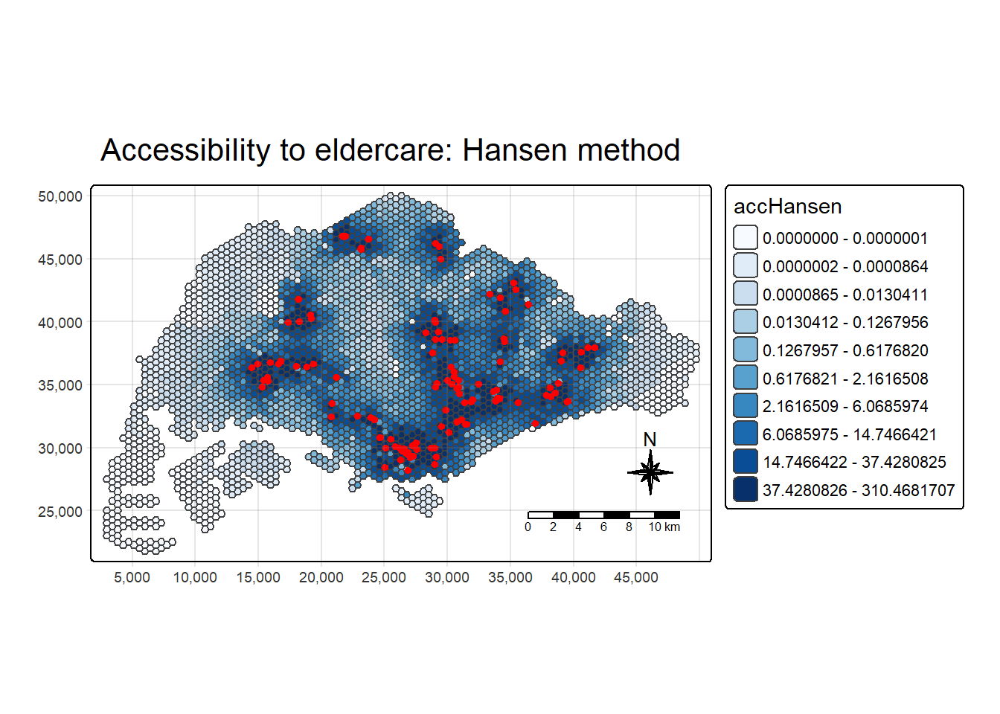
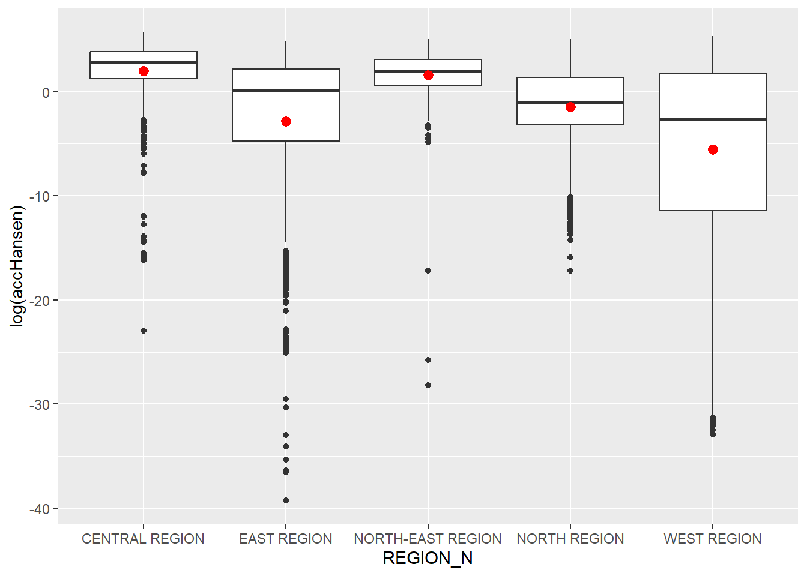
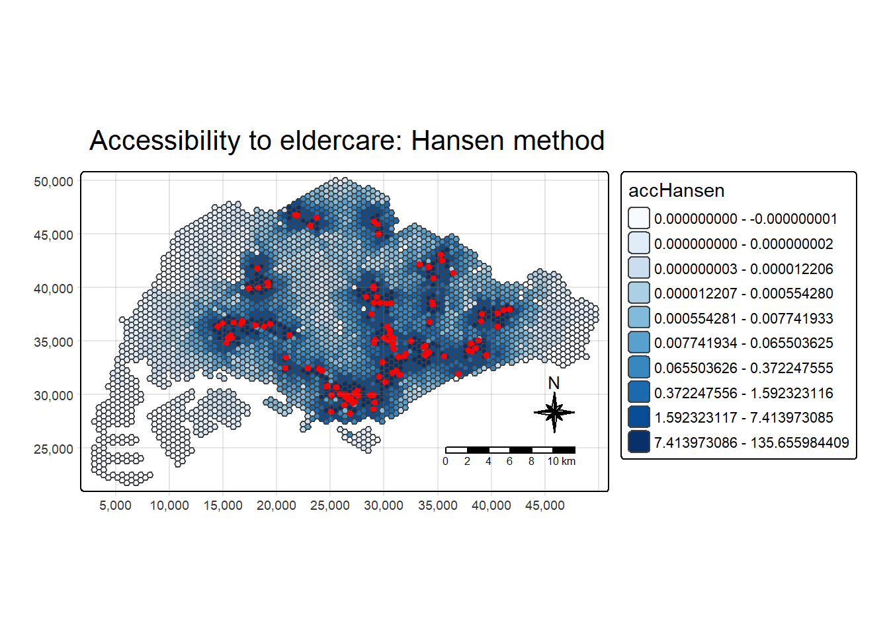
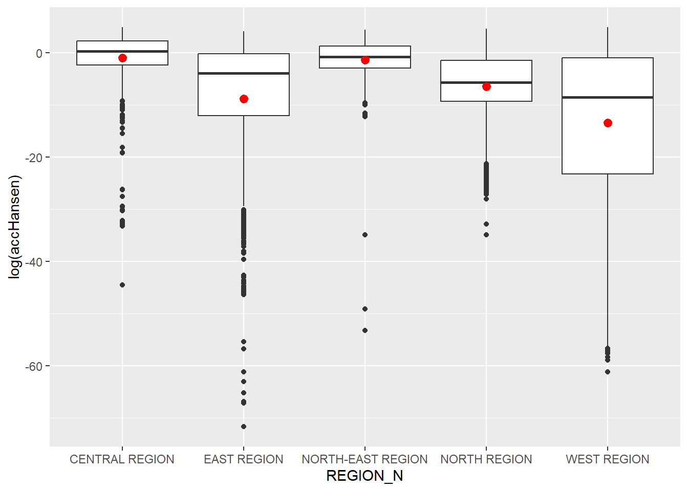

pacman::p_load(tmap, SpatialAcc, sf, ggstatsplot, reshape2, tidyverse)Hands-on Exercise 9A: Modelling Geographical Accessibility
1 Overview
In this exercise, we will learn to model geographical accessibility using Hansen’s potential model, Spatial Accessibility Measure (SAM), and other methods in R.
2 Learning Outcome
- Import GIS polygon data into R and save them as a simple feature data frame using the sf package.
- Import aspatial data into R and save them as a simple feature data frame using the sf package.
- Compute accessibility measures using Hansen’s potential model and Spatial Accessibility Measure (SAM).
- Visualize the accessibility measures using tmap and ggplot2 packages.
3 The Data
The following datasets will be used in this exercise:
| Data Set | Description | Format |
|---|---|---|
MP14_SUBZONE_NO_SEA_PL |
URA Master Plan 2014 subzone boundary GIS data. | ESRI Shapefile |
hexagons |
A 250m radius hexagons GIS data created using the st_make_grid() function of the sf package. |
ESRI Shapefile |
ELDERCARE |
GIS data showing the location of eldercare services, available in both ESRI shapefile and Google KML format. | ESRI Shapefile |
OD_Matrix |
A distance matrix with origin-destination information, including entry, network, and exit costs. | CSV |
All the values of the cost related fields are in metres.
4 Installing and Launching the R Packages
The following R packages will be used in this exercise:
| Package | Purpose | Use Case in Exercise |
|---|---|---|
| sf | Handles spatial data; imports, manages, and processes vector-based geospatial data. | Importing and transforming geospatial datasets such as subzone boundaries, hexagons, and eldercare locations. |
| SpatialAcc | Provides functions for computing geographical accessibility measures. | Calculating Hansen’s potential model, Spatial Accessibility Measure (SAM), and other accessibility metrics. |
| tidyverse | A collection of R packages for data science tasks like data manipulation, visualization, and modeling. | Wrangling and visualizing data, including importing CSV files and performing data transformations. |
| tmap | Creates static and interactive thematic maps using cartographic quality elements. | Visualizing accessibility measures on thematic maps. |
| ggplot2 | Creates data visualizations using a layered grammar of graphics. | Visualizing statistical graphics such as histograms and boxplots of accessibility measures. |
| ggstatsplot | Enhances plots with statistical details and facilitates data visualization. | Creating statistically enriched plots for exploratory data analysis and comparing distributions. |
| reshape2 | Provides tools to reshape data between wide and long formats. | Transforming data matrices into suitable formats for modeling. |
To install and load these packages, use the following code:
5 Geospatial Data Wrangling
5.1 Importing Geospatial Data
Three geospatial datasets—MP14_SUBZONE_NO_SEA_PL, hexagons, and ELDERCARE—are imported from the data/geospatial folder using the st_read() function from the sf package.
mpsz <- st_read(dsn = "data/geospatial", layer = "MP14_SUBZONE_NO_SEA_PL")Reading layer `MP14_SUBZONE_NO_SEA_PL' from data source
`D:\ssinha8752\ISSS608-VAA\In-class_Ex\In-class_Ex09\data\geospatial'
using driver `ESRI Shapefile'
Simple feature collection with 323 features and 15 fields
Geometry type: MULTIPOLYGON
Dimension: XY
Bounding box: xmin: 2667.538 ymin: 15748.72 xmax: 56396.44 ymax: 50256.33
Projected CRS: SVY21hexagons <- st_read(dsn = "data/geospatial", layer = "hexagons")Reading layer `hexagons' from data source
`D:\ssinha8752\ISSS608-VAA\In-class_Ex\In-class_Ex09\data\geospatial'
using driver `ESRI Shapefile'
Simple feature collection with 3125 features and 6 fields
Geometry type: POLYGON
Dimension: XY
Bounding box: xmin: 2667.538 ymin: 21506.33 xmax: 50010.26 ymax: 50256.33
Projected CRS: SVY21 / Singapore TMeldercare <- st_read(dsn = "data/geospatial", layer = "ELDERCARE")Reading layer `ELDERCARE' from data source
`D:\ssinha8752\ISSS608-VAA\In-class_Ex\In-class_Ex09\data\geospatial'
using driver `ESRI Shapefile'
Simple feature collection with 120 features and 19 fields
Geometry type: POINT
Dimension: XY
Bounding box: xmin: 14481.92 ymin: 28218.43 xmax: 41665.14 ymax: 46804.9
Projected CRS: SVY21 / Singapore TM5.2 Updating CRS Information
We update the Coordinate Reference System (CRS) to EPSG:3414 for all datasets.
mpsz <- st_transform(mpsz, 3414)
eldercare <- st_transform(eldercare, 3414)
hexagons <- st_transform(hexagons, 3414)You can verify the CRS of mpsz using st_crs():
st_crs(mpsz)Coordinate Reference System:
User input: EPSG:3414
wkt:
PROJCRS["SVY21 / Singapore TM",
BASEGEOGCRS["SVY21",
DATUM["SVY21",
ELLIPSOID["WGS 84",6378137,298.257223563,
LENGTHUNIT["metre",1]]],
PRIMEM["Greenwich",0,
ANGLEUNIT["degree",0.0174532925199433]],
ID["EPSG",4757]],
CONVERSION["Singapore Transverse Mercator",
METHOD["Transverse Mercator",
ID["EPSG",9807]],
PARAMETER["Latitude of natural origin",1.36666666666667,
ANGLEUNIT["degree",0.0174532925199433],
ID["EPSG",8801]],
PARAMETER["Longitude of natural origin",103.833333333333,
ANGLEUNIT["degree",0.0174532925199433],
ID["EPSG",8802]],
PARAMETER["Scale factor at natural origin",1,
SCALEUNIT["unity",1],
ID["EPSG",8805]],
PARAMETER["False easting",28001.642,
LENGTHUNIT["metre",1],
ID["EPSG",8806]],
PARAMETER["False northing",38744.572,
LENGTHUNIT["metre",1],
ID["EPSG",8807]]],
CS[Cartesian,2],
AXIS["northing (N)",north,
ORDER[1],
LENGTHUNIT["metre",1]],
AXIS["easting (E)",east,
ORDER[2],
LENGTHUNIT["metre",1]],
USAGE[
SCOPE["Cadastre, engineering survey, topographic mapping."],
AREA["Singapore - onshore and offshore."],
BBOX[1.13,103.59,1.47,104.07]],
ID["EPSG",3414]]5.3 Cleaning and Updating Attribute Fields
We remove redundant fields and add new ones. For eldercare, we add a capacity field, and for hexagons, we add a demand field, both with a constant value of 100.
eldercare <- eldercare %>%
select(fid, ADDRESSPOS) %>%
mutate(capacity = 100)hexagons <- hexagons %>%
select(fid) %>%
mutate(demand = 100)
Tip
For this exercise, a constant value of 100 is used. In practice, actual demand and capacity values should be used.
6 Aspatial Data Handling and Wrangling
6.1 Importing Distance Matrix
We import the OD_Matrix.csv file using read_csv() from the readr package, which creates a tibble data frame called ODMatrix.
ODMatrix <- read_csv("data/aspatial/OD_Matrix.csv", skip = 0)Rows: 375000 Columns: 6
── Column specification ────────────────────────────────────────────────────────
Delimiter: ","
dbl (6): origin_id, destination_id, entry_cost, network_cost, exit_cost, tot...
ℹ Use `spec()` to retrieve the full column specification for this data.
ℹ Specify the column types or set `show_col_types = FALSE` to quiet this message.6.2 Tidying the Distance Matrix
The imported ODMatrix organizes the distance matrix column-wise.
head(ODMatrix)# A tibble: 6 × 6
origin_id destination_id entry_cost network_cost exit_cost total_cost
<dbl> <dbl> <dbl> <dbl> <dbl> <dbl>
1 1 1 668. 19847. 47.6 20562.
2 1 2 668. 45027. 31.9 45727.
3 1 3 668. 17644. 173. 18486.
4 1 4 668. 36010. 92.2 36770.
5 1 5 668. 31068. 64.6 31801.
6 1 6 668. 31195. 117. 31980.However, most R modeling packages expect the matrix in a format where rows represent origins (from) and columns represent destinations (to).
We use pivot_wider() from the tidyr package to reshape the data from a long format to a wide format.
distmat <- ODMatrix %>%
select(origin_id, destination_id, total_cost) %>%
pivot_wider(names_from = destination_id, values_from = total_cost) %>%
select(-origin_id)6.3 Converting Distance to Kilometers
Since the distances are in meters (due to the SVY21 projected coordinate system), we convert them to kilometers using the code below.
distmat_km <- as.matrix(distmat/1000)7 Modelling and Visualising Accessibility using Hansen Method
8 Power Selection 2
The code chunk below uses ac() to compute the Hansen’s accessibility and saves the output in a data frame by using data.frame().
acc_Hansen <- data.frame(ac(hexagons$demand,
eldercare$capacity,
distmat_km,
power = 2,
family = "Hansen"))Let’s have a quick review on the Hansen accessibility measure, after rename the column name to accHansen.
colnames(acc_Hansen) <- "accHansen" We convert the data table into tibble format by using the code chunk below.
acc_Hansen <- acc_Hansen %>%
as_tibble()knitr::kable(head(acc_Hansen, 10),
align = 'c', # column alignment: c=center, l=left, r=right
format = "html") # or "latex", "markdown", "pandoc"| accHansen |
|---|
| 0 |
| 0 |
| 0 |
| 0 |
| 0 |
| 0 |
| 0 |
| 0 |
| 0 |
| 0 |
Lastly, we join the acc_Hansen tibble with the hexagon sf data frame using bind_cols(). Because the sf object is on the left side of the operation, the resulting dataset automatically inherits the sf class, preserving its spatial attributes.
hexagon_Hansen <- bind_cols(hexagons, acc_Hansen)knitr::kable(head(hexagon_Hansen,10),
align = "c",
format = "markdown")| fid | demand | accHansen | geometry |
|---|---|---|---|
| 1 | 100 | 0 | POLYGON ((2667.538 27506.33… |
| 2 | 100 | 0 | POLYGON ((2667.538 25006.33… |
| 3 | 100 | 0 | POLYGON ((2667.538 24506.33… |
| 4 | 100 | 0 | POLYGON ((2667.538 24006.33… |
| 5 | 100 | 0 | POLYGON ((2667.538 23506.33… |
| 6 | 100 | 0 | POLYGON ((2667.538 23006.33… |
| 7 | 100 | 0 | POLYGON ((3100.551 28756.33… |
| 8 | 100 | 0 | POLYGON ((3100.551 28256.33… |
| 9 | 100 | 0 | POLYGON ((3100.551 27756.33… |
| 10 | 100 | 0 | POLYGON ((3100.551 27256.33… |
8.1 Visualising Hansen’s Accessibility
8.1.1 Extracting Map Extend
First, we extract the extent of the hexagon sf layer using st_bbox() of sf package.
mapex <- st_bbox(hexagons)Next, we create a choropleth map with the tmap package to visualise eldercare service accessibility across Singapore.
tm_shape(hexagon_Hansen,
bbox = mapex) +
tm_polygons(fill = "accHansen",
fill.scale = tm_scale_intervals(
style = "quantile",
n = 10,
values = "brewer.blues")) +
tm_shape(eldercare) +
tm_dots(size = 0.3,
fill = "red",
col = "black") +
tm_title("Accessibility to eldercare: Hansen method") +
tm_layout(frame = TRUE) +
tm_compass(type="8star", size = 2) +
tm_scalebar() +
tm_grid(alpha = 0.2)
The map indicates that accessibility is highest in areas with clusters of eldercare centres, particularly in the Central Region and established heartland estates. In contrast, large peripheral areas exhibit zero accessibility.
8.2 Statistical Graphic Visualisation
Next, we create a choropleth map with the tmap package to visualise eldercare service accessibility across Singapore.
In this section, we compare the distribution of Hansen accessiblity scores across URA Planning regions. To do so, we first append the main dataset mpsz to the hexagon_Hansen sf data frame using st_join().
hexagon_Hansen <- st_join(hexagon_Hansen, mpsz, join= st_intersects)Then we use ggplot(), geom_boxplot() and stat_summary() , to create boxplots for each region and display the mean accessibility value.
ggplot(data=hexagon_Hansen,
aes(y = log(accHansen), x= REGION_N)) +
geom_boxplot() +
stat_summary(fun="mean", colour ="red", size=0.5)Warning: Removed 5 rows containing missing values or values outside the scale range
(`geom_segment()`).
The boxplots of Hansen’s accessibility show that the Central Region has the highest average level of accessibility, followed by the North-East Region. In contrast, the West Region records the lowest average accessibility. The East Region displays the largest variability, as indicated by its long lower whiskers, suggesting uneven access to eldercare services across the region, possibly influenced by extensive non-residential areas, the airport.
The average Hansen accessibility scores rank the regions from highest to lowest as follows: Central, North-East, North, East, and West.
9 Power Selection 0.5
acc_Hansen_05 <- data.frame(ac(hexagons$demand,
eldercare$capacity,
distmat_km,
#d0 = 50,
power = 0.5,
family = "Hansen"))
colnames(acc_Hansen_05) <- "accHansen"
acc_Hansen_05 <- as_tibble(acc_Hansen_05)
hexagon_Hansen_05 <- bind_cols(hexagons, acc_Hansen_05)tm_shape(hexagon_Hansen_05,
bbox = mapex) +
tm_polygons(fill = "accHansen",
fill.scale = tm_scale_intervals(
style = "quantile",
n = 10,
values = "brewer.blues")) +
tm_shape(eldercare) +
tm_dots(size = 0.3,
fill = "red",
col = "black") +
tm_title("Accessibility to eldercare: Hansen method") +
tm_layout(frame = TRUE) +
tm_compass(type="8star", size = 2) +
tm_scalebar() +
tm_grid(alpha = 0.2)
hexagon_Hansen_05 <- st_join(hexagon_Hansen_05, mpsz, join= st_intersects)
ggplot(data=hexagon_Hansen_05,
aes(y = log(accHansen), x= REGION_N)) +
geom_boxplot() +
stat_summary(fun="mean", colour ="red", size=0.5)Warning: Removed 5 rows containing missing values or values outside the scale range
(`geom_segment()`).
10 Power Selection 1
acc_Hansen_10 <- data.frame(ac(hexagons$demand,
eldercare$capacity,
distmat_km,
#d0 = 50,
power = 1.0,
family = "Hansen"))
colnames(acc_Hansen_10) <- "accHansen"
acc_Hansen_10 <- as_tibble(acc_Hansen_10)
hexagon_Hansen_10 <- bind_cols(hexagons, acc_Hansen_10)tm_shape(hexagon_Hansen_10,
bbox = mapex) +
tm_polygons(fill = "accHansen",
fill.scale = tm_scale_intervals(
style = "quantile",
n = 10,
values = "brewer.blues")) +
tm_shape(eldercare) +
tm_dots(size = 0.3,
fill = "red",
col = "black") +
tm_title("Accessibility to eldercare: Hansen method") +
tm_layout(frame = TRUE) +
tm_compass(type="8star", size = 2) +
tm_scalebar() +
tm_grid(alpha = 0.2)
hexagon_Hansen_10 <- st_join(hexagon_Hansen_10, mpsz, join= st_intersects)
ggplot(data=hexagon_Hansen_10,
aes(y = log(accHansen), x= REGION_N)) +
geom_boxplot() +
stat_summary(fun="mean", colour ="red", size=0.5)Warning: Removed 5 rows containing missing values or values outside the scale range
(`geom_segment()`).
11 Power Selection 1.5
acc_Hansen_15 <- data.frame(ac(hexagons$demand,
eldercare$capacity,
distmat_km,
#d0 = 50,
power = 1.5,
family = "Hansen"))
colnames(acc_Hansen_15) <- "accHansen"
acc_Hansen_15 <- as_tibble(acc_Hansen_15)
hexagon_Hansen_15 <- bind_cols(hexagons, acc_Hansen_15)tm_shape(hexagon_Hansen_15,
bbox = mapex) +
tm_polygons(fill = "accHansen",
fill.scale = tm_scale_intervals(
style = "quantile",
n = 10,
values = "brewer.blues")) +
tm_shape(eldercare) +
tm_dots(size = 0.3,
fill = "red",
col = "black") +
tm_title("Accessibility to eldercare: Hansen method") +
tm_layout(frame = TRUE) +
tm_compass(type="8star", size = 2) +
tm_scalebar() +
tm_grid(alpha = 0.2)
hexagon_Hansen_15 <- st_join(hexagon_Hansen_15, mpsz, join= st_intersects)
ggplot(data=hexagon_Hansen_15,
aes(y = log(accHansen), x= REGION_N)) +
geom_boxplot() +
stat_summary(fun="mean", colour ="red", size=0.5)Warning: Removed 5 rows containing missing values or values outside the scale range
(`geom_segment()`).
12 Power Section 2.5
acc_Hansen_25 <- data.frame(ac(hexagons$demand,
eldercare$capacity,
distmat_km,
#d0 = 50,
power = 2.5,
family = "Hansen"))
colnames(acc_Hansen_25) <- "accHansen"
acc_Hansen_25 <- as_tibble(acc_Hansen_25)
hexagon_Hansen_25 <- bind_cols(hexagons, acc_Hansen_25)tm_shape(hexagon_Hansen_25,
bbox = mapex) +
tm_polygons(fill = "accHansen",
fill.scale = tm_scale_intervals(
style = "quantile",
n = 10,
values = "brewer.blues")) +
tm_shape(eldercare) +
tm_dots(size = 0.3,
fill = "red",
col = "black") +
tm_title("Accessibility to eldercare: Hansen method") +
tm_layout(frame = TRUE) +
tm_compass(type="8star", size = 2) +
tm_scalebar() +
tm_grid(alpha = 0.2)
hexagon_Hansen_25 <- st_join(hexagon_Hansen_25, mpsz, join= st_intersects)
ggplot(data=hexagon_Hansen_25,
aes(y = log(accHansen), x= REGION_N)) +
geom_boxplot() +
stat_summary(fun="mean", colour ="red", size=0.5)Warning: Removed 5 rows containing missing values or values outside the scale range
(`geom_segment()`).
Note
When varying the distance-decay power from 0.5 to 2.5 in the ac() function (Hansen accessibility), the overall magnitude of scores falls as the power increases. For example, with power = 0.5 the scores range from 0 to 1,158, whereas at power = 2.5 they range from 0 to 136. Intuitively, stronger distance-decay (higher power) penalises far-away opportunities more heavily, so aggregate accessibility declines. In areas where services are sparse or demand is strong relative to supply, accessibility is correspondingly lower.
13 OBSERVATIONS
Spatial Distribution of Eldercare Accessibility
Central and Eastern Regions: High Accessibility Neighbourhoods such as Toa Payoh, Kallang, Queenstown, Bedok, and Tampines consistently register elevated accessibility scores across all power values. This pattern reflects a denser concentration of eldercare facilities and/or reduced travel distances within these zones.
Northern and Western Regions: Low Accessibility In contrast, areas including Woodlands, Sembawang, Yishun, Jurong West, and Lim Chu Kang exhibit comparatively lower accessibility. This suggests either a sparse distribution of eldercare services or greater spatial separation between demand points and available capacity.
Effect of Power Value on Accessibility Sensitivity
Low Power Values (e.g., 0.5): Accessibility is more uniformly distributed, as distant facilities retain substantial influence.
Moderate Power Values (1 to 1.5): Spatial disparities become more pronounced, revealing clear distinctions between well-served and underserved regions.
High Power Values (2 to 2.5): Accessibility becomes highly localized. Only areas in close proximity to eldercare facilities maintain high scores, with sharp declines observed as distance increases.